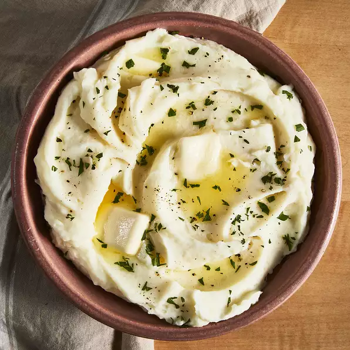
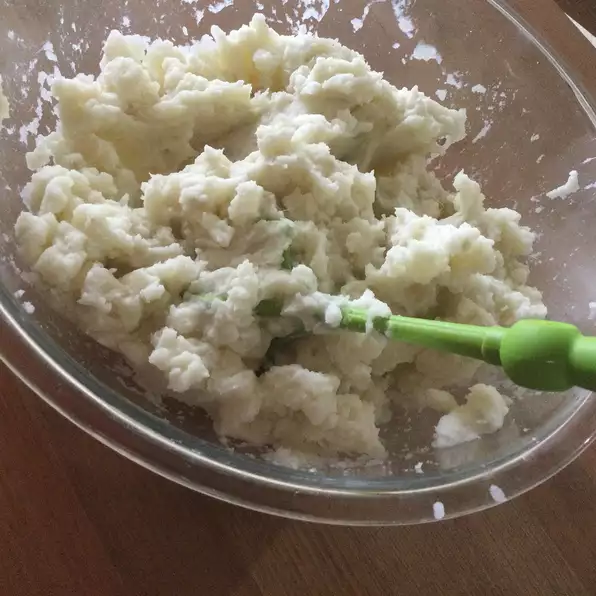

Basic Mash Potatoes

Ingredients
- 2 pounds baking potatoes, peeled and quartered
- Salt and pepper, to season
- 1 cup milk
- 1 cup butter
Preparation Time
Instructions
-
Bring a pot of salted water to a boil. Add potatoes and cook until
tender but still firm, about 15 minutes; drain.
-
In a small saucepan heat butter and milk over low heat until butter is
melted. Using a potato masher or electric beater, slowly blend milk
mixture into potatoes until smooth and creamy. Season with salt and
pepper to taste.

Other Recipes
Main Page